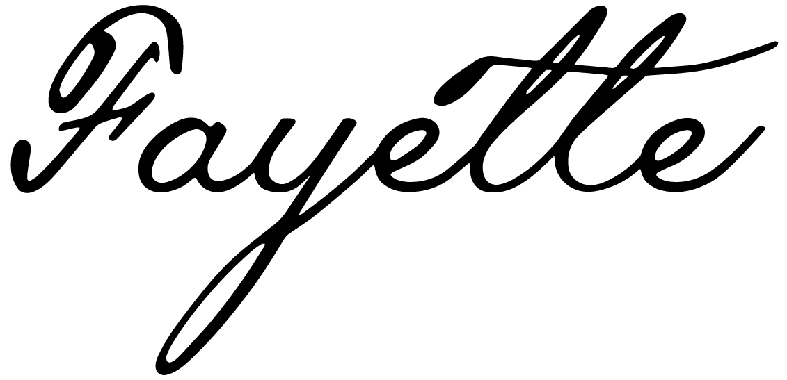
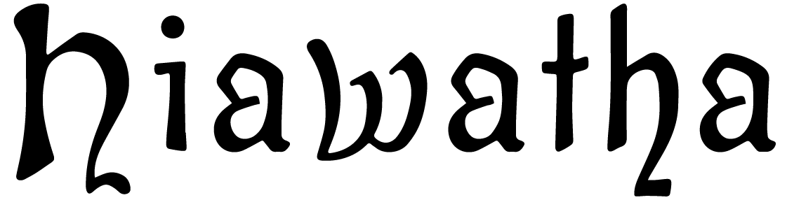
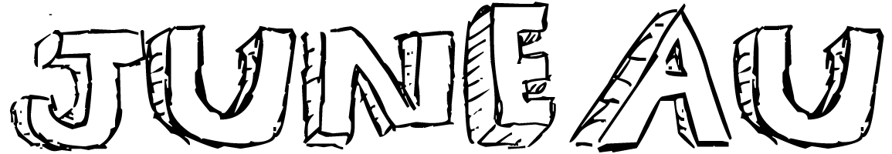
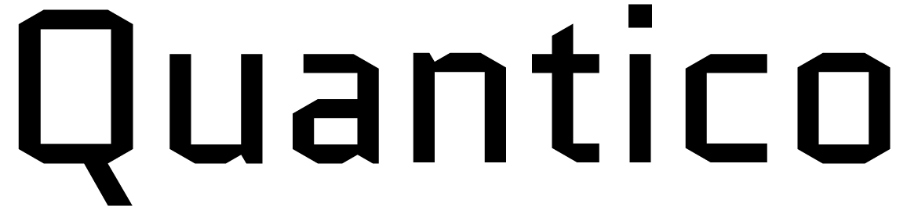
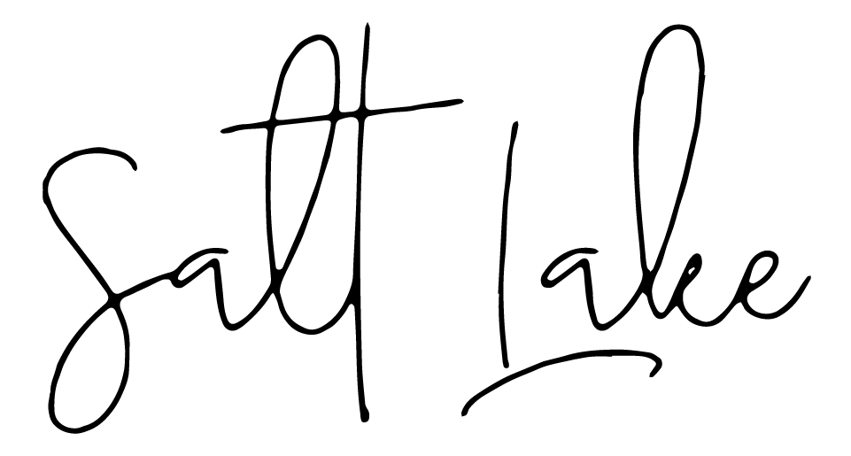
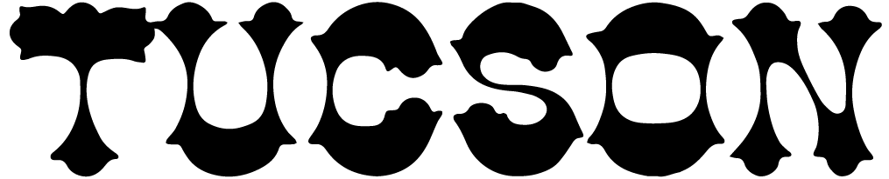

. This place is top rank. We hope that other cities will be this nice.
. This place is top rank. We hope that other cities will be this nice.As Fievel made his way west, he scrambled to keep his real locations hidden in each entry in his journal. He hoped the small similarities between the decoy locations and the real ones wouldn't be noticed.
So, we enjoyed the freedom of . A mouse that has land to itself is a proud mouse.
Today, the family made it to . We climbed the tallest peak to reach it.
All of us made it through . This place was so beautiful, that no one could speak. No one said a word.
Traveled all the way to .The advice our elders gave us provided encouragement.
Eventually our travels took us to . I can almost picture no animals causing us harm ever again.
Started off towards . We avoided shady characters. If you give Mr. J. no lip you should be just fine.
I was happy to make it to . This place is top rank. We hope that other cities will be this nice.
Dangerous times in . Dad sparring with others made for some challenges.
Eating was challenging around . Often food went rotten and made us ill. I love how we were able to handle this.
Rough times awaited us in . We waited for injuries to heal. Lives depended on it!
Many didn't think we would make it to . We were haunted by the phantoms of the past.
Arrived in . The grandest domains of life await us.
Pursued constantly, we made it to . Time to scope out new safe shelters.